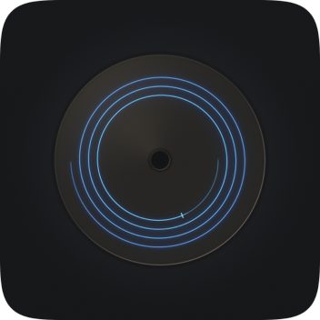

Pregap for macOS
Email: support@pregap.app
Pregap keeps a short log of what it did in each session: the drives it saw, the files you added, the burn settings, and any errors. It stays on your Mac until you choose to send it.
Pregap burns to real optical hardware, so a drive has to be attached before it can do anything. Plug in the burner, give macOS a few seconds to see it, and the drive appears in the burn bar. Bus-powered USB drives sometimes need a powered hub or a direct port rather than a keyboard or monitor hub.
Whatever your copy of macOS can decode (FLAC, ALAC, WAV, AIFF, MP3, AAC, Opus,
Ogg, CAF and more), plus playlists (.m3u, .m3u8,
.pls) and whole folders. Anything that is not already 44.1 kHz 16-bit
stereo is converted on the fly, with mastering-quality sample rate conversion and
dither. Your original files are never modified.
Being a supported format is not a guarantee that a particular
file will open. DRM-protected purchases (Audible .aax,
protected .m4p) and truncated or corrupt downloads cannot be decoded.
The row is flagged with the reason and the burn is blocked until you remove or
replace that track. That is deliberate, so a bad file can never become a half-written
disc.
A pregap is the run-up before a track's actual start point: the part CD players count down through as negative time. Track 1's is mandatory and at least two seconds. Every other one is optional, and controlling it is the difference between a DJ mix or live album that flows and one with two seconds of silence dropped between every track. Pregap burns disc-at-once and defaults every gap to zero; you can change the default or override any single track.
Yes. Pregap burns standard audio CDs, and CDJs play them, CD-R included. Burn at a moderate speed on good CD-R media for the most reliable reads on older decks. Gaps set to zero mean a mix can be split into tracks and still play seamlessly straight through.
CD-Text is written into the lead-in during the burn, and not every player reads it. CDJs, car head units and many hi-fi players do; most computers and some older players do not. If your player supports it and the disc still shows nothing, check that the CD-Text fields were filled in before the burn, because they cannot be added to a finished disc.
No. Pregap burns audio CDs and does that one thing properly. Use Finder's built-in disc burning for data discs.
Some drives need a moment after a disc is inserted, or after a previous burn, before they report media status correctly. Eject, reseat the disc, and wait a few seconds. A CD-RW that already holds a session can be erased with File ▸ Erase Disc….
No. It has no network access at all: no track lookup, no cover art, no analytics. See the privacy policy.